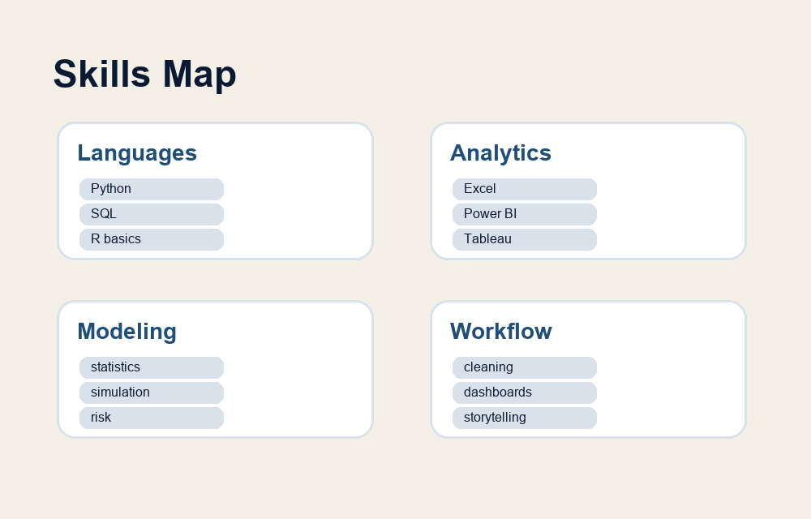
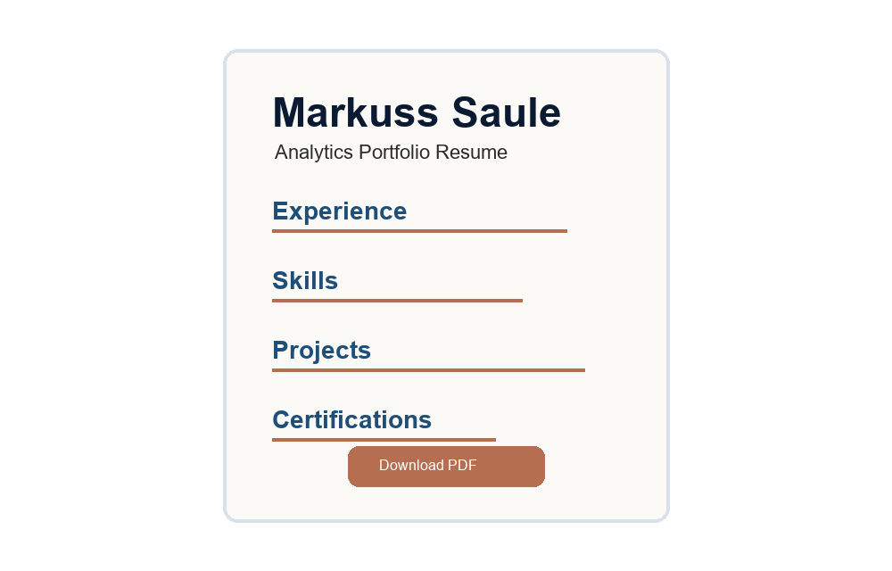

Qualifications
Resume and Skills
This page gives a quick view of my technical skills, project experience, certifications, and the best ways to connect with me.
Professional Summary
I am building a foundation in analytics, business intelligence, statistics, data science, and machine learning. I like projects where the goal is not only to analyze data, but to make the result easier for someone else to understand and use.
Technical Skills
Languages
Python, SQL, basic R, HTML, CSS
Analytics Tools
Excel, Power BI, Tableau, spreadsheets, charts, dashboards
Methods
Data cleaning, descriptive statistics, simulation, risk scoring, model evaluation
Communication
Project writeups, visual summaries, plain-language explanations

Experience and Certifications
This section will include relevant coursework, class projects, certificates, work experience, and selected achievements. Each item should focus on what I did, what tools I used, and what the result was.
Resume
Downloadable Resume
A downloadable resume will be linked here. The resume should match the same professional style as the website and point visitors back to the portfolio projects.
Download Resume{kind=link}
